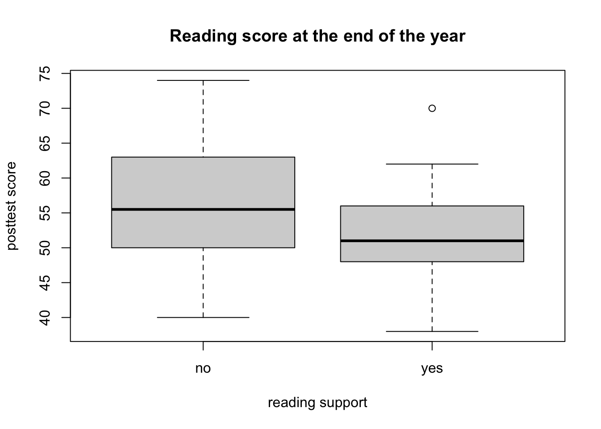
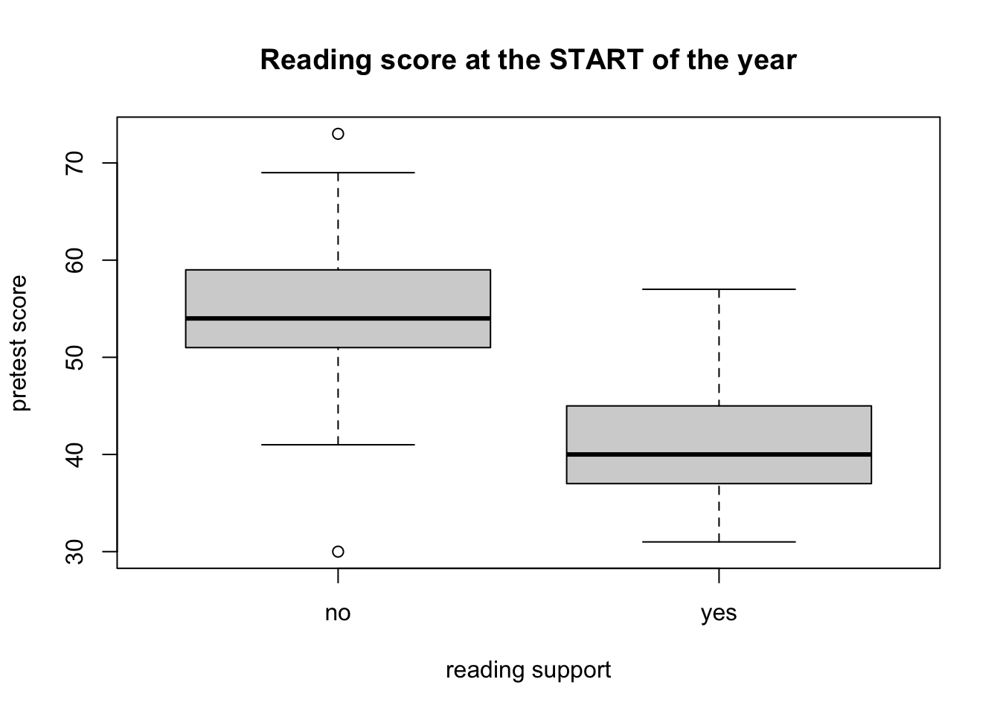
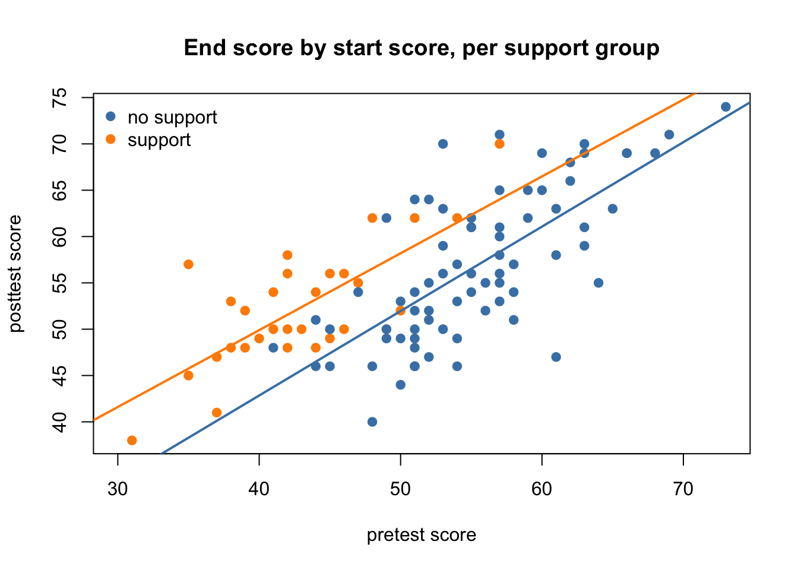
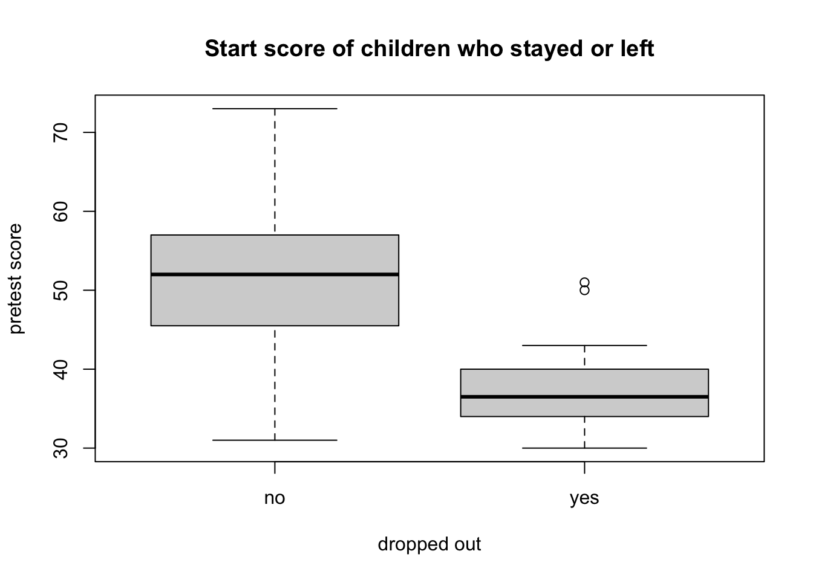
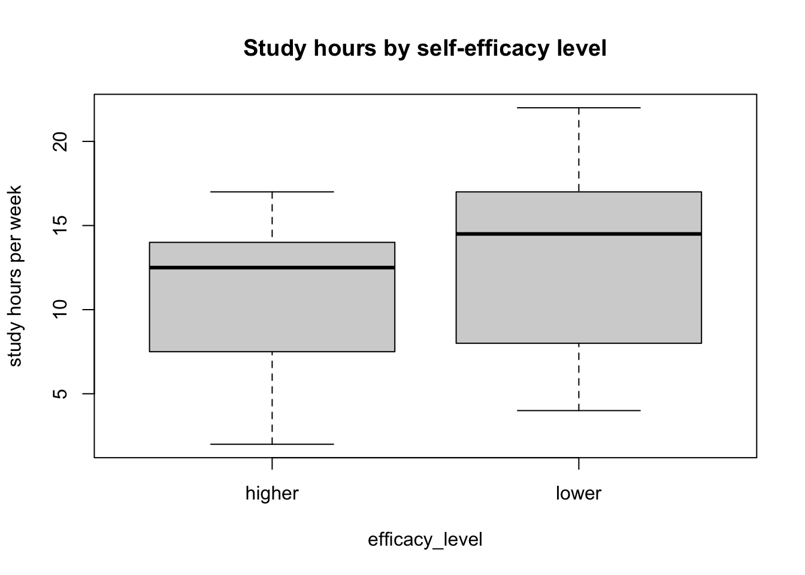
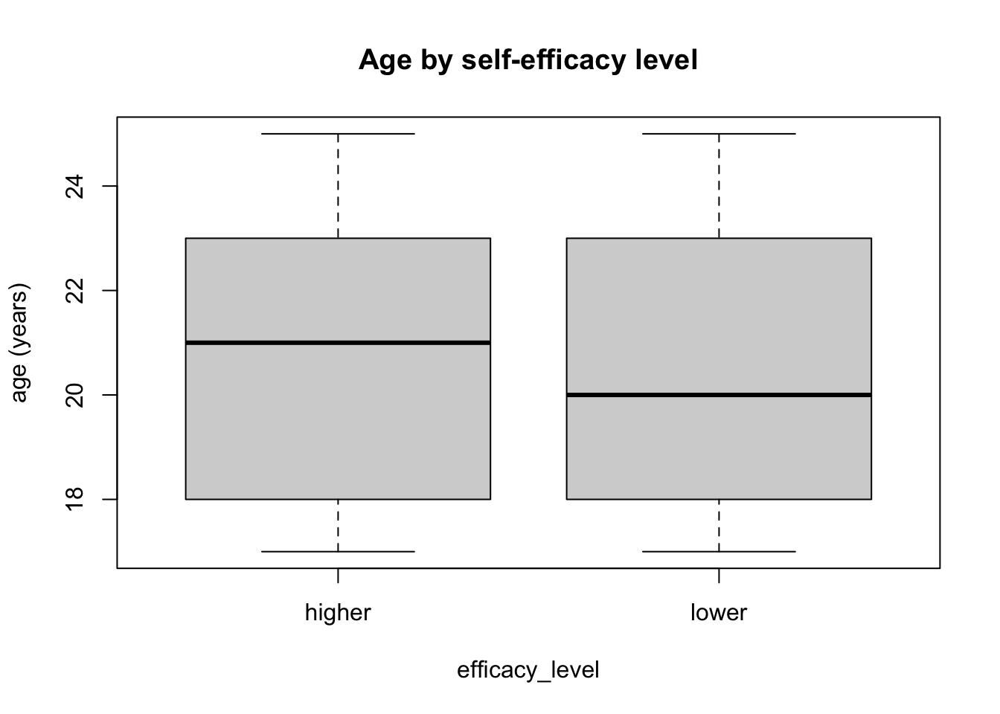
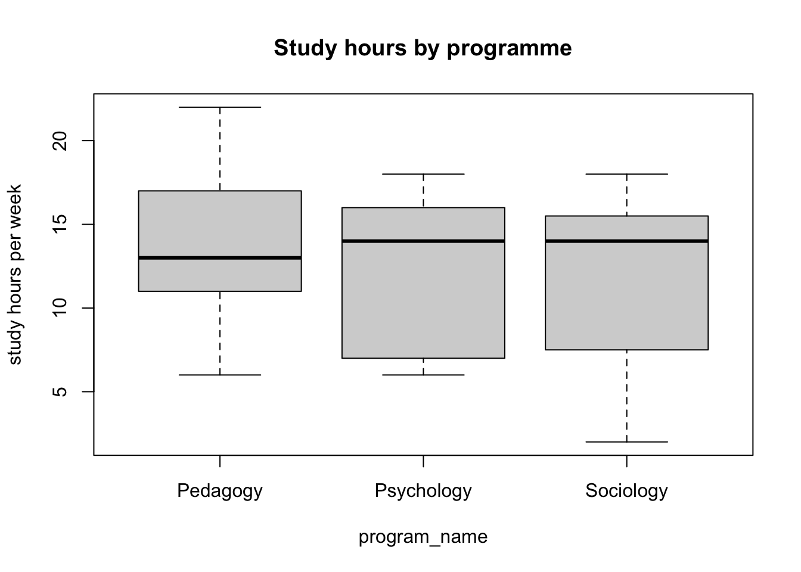
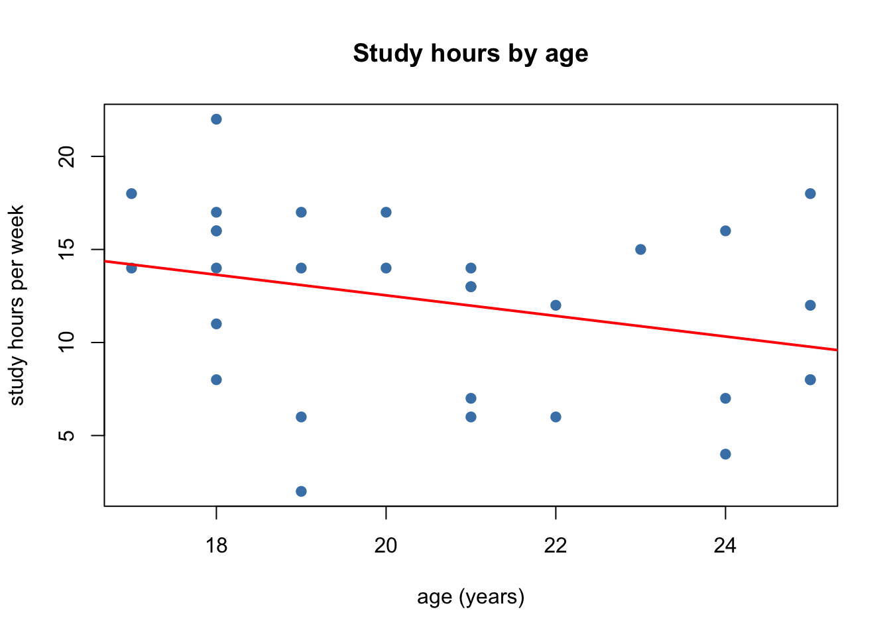

survey <- read.csv("class_survey_clean.csv")r_tutorial_week_06
Werkcollege 6
How to use this tutorial
Welcome back! In Week 4 and Week 5 you learned to test differences and relations: with a t-test, and with simple regression.
This week we ask a more critical question: can we trust what we found? Suppose two groups differ. Is the difference really caused by the thing we are interested in, or by something else? This is the question of validity. In the lecture you met the threats to validity. Today you learn how to check some of them in R.
We work in three parts:
- A case study: reading support for children. We use a simulated dataset, where we know the truth, to see how a third variable can fool us.
- Dropout: who left the study, and does it matter?
- Your own research question: you apply the same checks to the class data.
Work through this page carefully, from top to bottom. Every short explanation is followed by a Your turn task to do yourself.
General tips:
- Read each part slowly and in order. Each step builds on the one before it.
- Type the code yourself instead of copying and pasting it. You learn faster this way.
- Errors are normal. Read the message and try again.
- If you are stuck, ask a teacher or check the FAQ.
- Save your work often.
1 Start workflow
We begin, as always, with the start workflow:
- Open RStudio: click on the RStudio application.
- Set the working directory: click Session > Set Working Directory > Choose Directory, and choose your
research_methodsfolder. - Open a new script: click File > New File > R Script.
- On the first line, write a comment with the title, for example:
# R tutorial - Week 6. - Save the script as
week6.Rin yourresearch_methodsfolder. - Load your cleaned data from Week 2 into an object called
survey:
WarningWatch out
If you see Error: cannot open file ..., R cannot find the file. Check that your working directory is research_methods (run getwd() to print it), and that class_survey_clean.csv really sits in that folder.
Your turn
Complete the start workflow and load survey. Check that survey appears in the Environment pane (top-right).
2 Validity: a short refresher
2.1 Internal and external validity
- Internal validity: is the difference (or relation) we found really caused by the variable we study, and not by something else?
- External validity: do our results also hold for other people, places, and times, outside our own sample?
2.2 Designs and comparable groups
The design of a study decides how well it protects internal validity.
| Design | How are the groups formed? | Are the groups comparable? |
|---|---|---|
| Experiment with random assignment | By chance (for example, a coin flip) | Yes, on average: chance spreads all other differences evenly over the groups |
| Quasi-experiment | The groups already exist (for example, two schools) | Not automatically: you have to check |
| Correlational / survey study | People are only measured, nothing is assigned | Not automatically: you have to check |
In orthopedagogy, random assignment is often not possible or not ethical: you cannot refuse help to a child who needs it. So we often work with groups that already exist. Then we must check whether the groups are comparable.
2.3 Third variables and confounding
A third variable is a variable that is not the independent variable (x) or the dependent variable (y), but may still play a role. When a third variable is the real reason for a difference, we call it a confounder, and the problem confounding. In the lecture this was linked to the threat of subject characteristics: the groups differ in some characteristic of the people themselves (age, ability, motivation, …).
A third variable can only confound your result when it is related to both:
- the groups (or x): the groups differ on the third variable, and
- the outcome (y): the third variable is related to the outcome.
If only one of the two is true, the third variable cannot explain your result. This gives us a checklist that we use for the rest of this tutorial.
NoteThe confounding checklist
- Main question – look at and test the relation between the groups (x) and the outcome (y).
- Comparable groups? – do the groups differ on the third variable?
- Related to the outcome? – is the third variable related to the outcome?
- Look within subgroups – does the relation between x and y stay the same among people who are similar on the third variable?
- Answer and reflect – answer the research question, and say how much you trust the answer.
Your turn
Think of your own research question. Which design does it use: experiment, quasi-experiment, or correlational? Write down two possible third variables that could confound your result, and explain in one sentence each why they could be related to both x and y.
3 Part 1 – A case study: does reading support help?
3.1 The data
A municipality offers extra reading support to children in primary school. Teachers decide which children get the support. At the end of the year, all children take a reading test. The question is: do children with support read better at the end of the year?
This is not an experiment: the teachers chose who got support. So the groups may not be comparable.
We simulate this dataset, as in Week 3. Because we make the data ourselves, we know the truth: in this simulation, the support does help, by 4 points. Let us see whether a simple comparison finds that. This code is to run and read; you do not need to write it yourself.
set.seed(2026)
n <- 120
reading <- data.frame(
id = 1:n,
age = sample(7:11, n, replace = TRUE), # age in years
pretest = round(rnorm(n, mean = 50, sd = 10)) # reading score at the START of the year
)
# Teachers give support mostly to children with a LOW start score
reading$support <- ifelse(runif(n) < plogis(-(reading$pretest - 47) / 4), "yes", "no")
# Reading score at the END of the year: the TRUE effect of support is +4 points
reading$posttest <- round(8 + 0.9 * reading$pretest + 1.5 * (reading$age - 9) +
4 * (reading$support == "yes") + rnorm(n, sd = 5))
# Some children leave the study before the end (more often weak readers)
dropped <- runif(n) < plogis(-(reading$pretest - 38) / 4)
reading$posttest[dropped] <- NA
head(reading)
#> id age pretest support posttest
#> 1 1 11 38 yes 53
#> 2 2 7 47 yes 55
#> 3 3 7 49 yes 50
#> 4 4 11 37 yes 47
#> 5 5 9 56 no 55
#> 6 6 10 58 no 54The variables are:
support: did the child get reading support ("yes"or `“no”)? This is our independent variable (the groups).posttest: reading score at the end of the year. This is our dependent variable (the outcome).pretest: reading score at the start of the year, before the support. A possible third variable.age: age in years. Another possible third variable.
3.2 Missing values: NA
Some children have NA for posttest. You met NA in Week 2: it means “not available”. These children left the study before the end-of-year test. We look at them in Part 2. For now, you need to know one thing: many functions give NA as the answer when there is even one NA in the data.
mean(reading$posttest) # NA, because some values are missing
#> [1] NA
mean(reading$posttest, na.rm = TRUE) # na.rm = TRUE: remove the NAs first
#> [1] 55.50962The argument na.rm = TRUE means “remove the NAs before you compute”. t.test() and lm() remove rows with NA automatically.
Your turn
Run the simulation code. Then use table() to count how many children got support. Compute the mean pretest and the mean posttest of all children (remember na.rm = TRUE for posttest).
3.3 Step 1 of the checklist – The main question
We look at the main question first, as we would without thinking about validity:
boxplot(posttest ~ support,
data = reading,
main = "Reading score at the end of the year",
xlab = "reading support",
ylab = "posttest score")
mean_no <- mean(reading$posttest[reading$support == "no"], na.rm = TRUE)
mean_yes <- mean(reading$posttest[reading$support == "yes"], na.rm = TRUE)
c(no_support = mean_no, support = mean_yes)
#> no_support support
#> 56.79730 52.33333
mean_yes - mean_no # raw difference: support minus no support
#> [1] -4.463964
t.test(posttest ~ support, data = reading)
#>
#> Welch Two Sample t-test
#>
#> data: posttest by support
#> t = 2.9367, df = 66.037, p-value = 0.004562
#> alternative hypothesis: true difference in means between group no and group yes is not equal to 0
#> 95 percent confidence interval:
#> 1.429130 7.498797
#> sample estimates:
#> mean in group no mean in group yes
#> 56.79730 52.33333The children with support score lower at the end of the year, by about 4.5 points, and the t-test is significant. A quick conclusion would be: “reading support makes children read worse.” But we know the truth is the opposite: support helps by 4 points. What went wrong?
Your turn
Run the boxplot, the group means, and the t-test. Write down the raw difference and the p-value. Before you read on: can you think of a reason why the supported children score lower, even though support helps?
3.4 Step 2 of the checklist – Are the groups comparable?
Teachers gave support to children who needed it. So maybe the two groups were already different before the support started. We check this on our two third variables.
3.4.1 A numeric third variable: boxplot and means
For a numeric third variable, we compare the groups with a boxplot and the group means, exactly as for an outcome:
boxplot(pretest ~ support,
data = reading,
main = "Reading score at the START of the year",
xlab = "reading support",
ylab = "pretest score")
tapply(reading$pretest, reading$support, mean)
#> no yes
#> 54.75325 41.25581The function tapply() is new. It is a short way to compute something per group. Read tapply(reading$pretest, reading$support, mean) as: “take pretest, split it by support, and compute the mean for each group”.
The supported children already read much worse at the start. So the groups are not comparable on pretest.
tapply(reading$age, reading$support, mean)
#> no yes
#> 9.090909 9.255814On age, the groups are very similar. So age cannot explain the difference between the groups.
3.4.2 A categorical third variable: cross tables
When the third variable is a category, we compare the groups with a cross table (in Dutch: kruistabel). A cross table counts how often each combination of two categories appears. You make it with table(), now with two variables inside:
First, we turn pretest into a category with ifelse() (from Week 2): a "low" or "high" start level.
reading$pre_level <- ifelse(reading$pretest >= 50, "high", "low")
table(reading$support, reading$pre_level)
#>
#> high low
#> no 64 13
#> yes 5 38The first variable gives the rows, the second the columns. Each cell counts the children with that combination, for example “support = yes and pre_level = low”.
Counts are hard to compare when the groups have different sizes. So we turn them into proportions per row with prop.table():
cross <- table(reading$support, reading$pre_level)
round(prop.table(cross, margin = 1), 2) # margin = 1: each ROW adds up to 1
#>
#> high low
#> no 0.83 0.17
#> yes 0.12 0.88margin = 1 means: compute the proportions within each row. Now each row adds up to 1 (100%), and we can compare the rows directly. If the groups were comparable, the two rows would look about the same. Here, most supported children started at a "low" level, and most children without support started at a "high" level.
WarningWatch out: margin = 1 or margin = 2?
margin = 1 makes each row add up to 1; margin = 2 makes each column add up to 1. Choose the margin so that you compare your groups. Put your groups in the rows and use margin = 1, then you always read the table the same way.
Your turn
- Compare the two support groups on
pretestand onage, with a boxplot andtapply(). - Make the cross table of
supportbypre_level, and the row proportions withprop.table(). - Write one sentence per third variable: are the groups comparable on it?
3.6 Step 4 of the checklist – Look within subgroups
If pretest is the problem, we should compare children who are similar on pretest. We split the data into subgroups by start level, and compare support and no support within each subgroup.
low <- reading[reading$pre_level == "low", ] # only the children with a low start
high <- reading[reading$pre_level == "high", ] # only the children with a high start
tapply(low$posttest, low$support, mean, na.rm = TRUE)
#> no yes
#> 49.27273 50.92308
tapply(high$posttest, high$support, mean, na.rm = TRUE)
#> no yes
#> 58.11111 61.50000Within both subgroups, the children with support now score higher than the children without support. The direction of the difference has flipped. The negative difference in Step 1 was caused by the confounder: the supported children simply started much lower.
We can also look at this with regression within subgroups. We draw the scatterplot of posttest by pretest again, but give each support group its own colour and its own regression line:
model_no <- lm(posttest ~ pretest, data = reading[reading$support == "no", ])
model_yes <- lm(posttest ~ pretest, data = reading[reading$support == "yes", ])
plot(posttest ~ pretest,
data = reading,
pch = 19,
col = ifelse(reading$support == "yes", "darkorange", "steelblue"),
main = "End score by start score, per support group",
xlab = "pretest score",
ylab = "posttest score")
abline(model_no, col = "steelblue", lwd = 2)
abline(model_yes, col = "darkorange", lwd = 2)
legend("topleft", bty = "n", pch = 19,
col = c("steelblue", "darkorange"),
legend = c("no support", "support"))
Compare children with the same start score: the orange line (support) lies above the blue line (no support). We can compute how far apart the two lines are, for example for a child with a start score of 45:
pred_no <- unname(coef(model_no)[1] + coef(model_no)[2] * 45) # unname() only removes the label
pred_yes <- unname(coef(model_yes)[1] + coef(model_yes)[2] * 45)
c(no_support = pred_no, support = pred_yes)
#> no_support support
#> 47.40055 54.04807
pred_yes - pred_no # difference between children with the same start score
#> [1] 6.647518This difference is positive, and much closer to the true effect of 4 points than the raw difference of -4.5 in Step 1. It is not exactly 4, because our groups are small and every sample wobbles (Week 3).
NoteSubgroups are a rough tool
Even inside a subgroup, the children are not exactly the same: in the "low" group, the supported children still started a bit lower. Also, the subgroups are small, so the tests within them have little power. Splitting into subgroups is a first check, not a perfect solution. In Year 2 you learn multiple regression, a better way to take a third variable into account.
Your turn
- Run a t-test of
posttestbysupportwithin thelowsubgroup, and within thehighsubgroup. Write down the raw difference and the p-value for each. - Look at the group sizes with
table(low$support)andtable(high$support). Why are the p-values so large, even though the differences point in the same direction? - Compute the difference between the two regression lines for a child with a start score of 55. Is it similar to the difference at 45?
3.7 Step 5 of the checklist – Answer and reflect
There is no button in R that gives you “the truth”. The statistics are tools; you have to interpret them in context. A good answer combines the main result with what you learned from the checks.
NoteExample: an answer with reflection
“Children with reading support scored on average 4.5 points lower at the end of the year than children without support. However, the groups were not comparable: teachers gave support mainly to children who already read poorly at the start. The start score was strongly related to the end score, so it is a confounder. When we compared children with a similar start score, the supported children scored higher, by about 6.6 points. We therefore do not conclude that support is harmful. The data rather suggest that it helps, but because this is not an experiment and the subgroups are small, we cannot be sure. Other third variables that we did not measure (for example, motivation or support at home) could also play a role.”
Notice three things in this answer:
- It reports the raw differences, in points on the reading test.
- It names the confounder and explains why it matters (related to both the groups and the outcome).
- It is careful: it says how strong the evidence is, and which third variables could still play a role.
Your turn
Without looking at the example, write your own answer of four to six sentences to the question do children with reading support read better at the end of the year? Use the results of Steps 1 to 4.
4 Part 2 – Dropout: who left the study?
In the lecture you met mortality (also called dropout or attrition): people leave a study before it ends. Dropout is a threat to validity when the people who leave are different from the people who stay.
4.1 How many children left, and from which group?
The function is.na() gives TRUE for every missing value. We use it to make a new variable that tells us who left:
reading$dropped_out <- ifelse(is.na(reading$posttest), "yes", "no")
table(reading$dropped_out)
#>
#> no yes
#> 104 16Did dropout happen equally often in both groups? We use a cross table again:
cross_drop <- table(reading$support, reading$dropped_out)
cross_drop
#>
#> no yes
#> no 74 3
#> yes 30 13
round(prop.table(cross_drop, margin = 1), 2)
#>
#> no yes
#> no 0.96 0.04
#> yes 0.70 0.30A much larger share of the supported children left the study.
4.2 Are the dropouts different?
The useful thing about a pretest is that we have it for everybody, also for the children who left. So we can compare the dropouts with the children who stayed:
boxplot(pretest ~ dropped_out,
data = reading,
main = "Start score of children who stayed or left",
xlab = "dropped out",
ylab = "pretest score")
tapply(reading$pretest, reading$dropped_out, mean)
#> no yes
#> 51.74038 38.06250
t.test(pretest ~ dropped_out, data = reading)
#>
#> Welch Two Sample t-test
#>
#> data: pretest by dropped_out
#> t = 8.0496, df = 25.031, p-value = 2.08e-08
#> alternative hypothesis: true difference in means between group no and group yes is not equal to 0
#> 95 percent confidence interval:
#> 10.17853 17.17724
#> sample estimates:
#> mean in group no mean in group yes
#> 51.74038 38.06250The children who left were weaker readers at the start.
4.3 Why does this matter?
Think about what this does to our results:
- The weakest readers are missing from the end-of-year scores. So the mean
posttestof the children who stayed is higher than it would be for all children. We overestimate how well children read at the end. - Most dropouts came from the support group. So the support group at the end is no longer the same group that started: its weakest members are gone. This changes the comparison between the groups.
ImportantAlways check dropout
Whenever people are missing at the end of a study, check (1) how many left, (2) from which group, and (3) whether they differed at the start. Report this in your conclusion, even if you cannot fix it.
Your turn
- Make the variable
dropped_outand the cross table withsupport. Which group lost more children, in proportions? - Compare the dropouts and the stayers on
agewith a boxplot andtapply(). Do they differ? - Write two sentences: how could dropout change the conclusion of Part 1?
5 Part 3 – Your own research question
Now you apply the checklist to the class data. Below we show the code with an example question: do students with a higher self-efficacy study more hours? Here efficacy_level ("higher" / "lower", from Week 2) is the group, and study_hours is the outcome. We check two possible third variables: program_name (a category) and age (a number).
The class data are real data, not a simulation. So we do not know the truth, and we cannot say in advance what you will find. That is exactly the situation of a real researcher.
Step 1 – Main question.
boxplot(study_hours ~ efficacy_level, data = survey,
main = "Study hours by self-efficacy level",
ylab = "study hours per week")
tapply(survey$study_hours, survey$efficacy_level, mean)
#> higher lower
#> 11.12500 13.35714
t.test(study_hours ~ efficacy_level, data = survey)
#>
#> Welch Two Sample t-test
#>
#> data: study_hours by efficacy_level
#> t = -1.2378, df = 24.778, p-value = 0.2274
#> alternative hypothesis: true difference in means between group higher and group lower is not equal to 0
#> 95 percent confidence interval:
#> -5.947785 1.483500
#> sample estimates:
#> mean in group higher mean in group lower
#> 11.12500 13.35714Step 2 – Comparable groups?
# a categorical third variable: cross table with row proportions
cross_prog <- table(survey$efficacy_level, survey$program_name)
cross_prog
#>
#> Pedagogy Psychology Sociology
#> higher 6 5 5
#> lower 4 4 6
round(prop.table(cross_prog, margin = 1), 2)
#>
#> Pedagogy Psychology Sociology
#> higher 0.38 0.31 0.31
#> lower 0.29 0.29 0.43
# a numeric third variable: boxplot and means
boxplot(age ~ efficacy_level, data = survey,
main = "Age by self-efficacy level", ylab = "age (years)")
tapply(survey$age, survey$efficacy_level, mean)
#> higher lower
#> 20.68750 20.64286Step 3 – Related to the outcome?
# categorical third variable
boxplot(study_hours ~ program_name, data = survey,
main = "Study hours by programme", ylab = "study hours per week")
# numeric third variable
plot(study_hours ~ age, data = survey, pch = 19, col = "steelblue",
main = "Study hours by age", xlab = "age (years)", ylab = "study hours per week")
abline(lm(study_hours ~ age, data = survey), col = "red", lwd = 2)
Step 4 – Within subgroups (only needed when a third variable is related to both the groups and the outcome). Make subgroups of the third variable and compare the groups inside each subgroup, for example:
survey$age_group <- ifelse(survey$age >= 21, "older", "younger")
younger <- survey[survey$age_group == "younger", ]
older <- survey[survey$age_group == "older", ]
tapply(younger$study_hours, younger$efficacy_level, mean)
#> higher lower
#> 11.42857 15.75000
tapply(older$study_hours, older$efficacy_level, mean)
#> higher lower
#> 10.88889 10.16667
WarningWatch out: very small subgroups
Our class has only about 30 students. When you split them into subgroups, some cells may hold only two or three people. Check the group sizes with table() before you interpret a mean. A mean of two people says very little.
Your turn
For your own research question:
- Main question: make a boxplot (or scatterplot), compute the raw difference (or slope), and run the test. Use the five steps of a test from Week 4 and 5.
- Comparable groups? Choose at least one categorical and one numeric third variable. Compare your groups on them with a cross table (
table()andprop.table()) and with a boxplot andtapply(). - Related to the outcome? Check each third variable with a boxplot, scatterplot, t-test, or regression.
- Within subgroups: if a third variable is related to both, compare your groups within subgroups of that variable. Check the subgroup sizes first.
- Answer and reflect: write an answer of four to six sentences. Name the possible confounders, say what your checks showed, and say how much you trust your answer.
6 External validity: who is in the sample?
So far we looked at internal validity. External validity asks whether the results also hold outside the sample. A first check is to describe who is in your sample, and compare that with the population you want to say something about (Week 3).
round(prop.table(table(survey$program_name)), 2) # shares of each programme
#>
#> Pedagogy Psychology Sociology
#> 0.33 0.30 0.37
summary(survey$age)
#> Min. 1st Qu. Median Mean 3rd Qu. Max.
#> 17.00 18.00 20.50 20.67 22.75 25.00If, for example, your population is “all first-year students in the Netherlands”, ask: is the share of each programme, the age range, or the share of men and women in our class similar to that population? If not, the results may not generalise.
NoteExample: a threat to external validity
The reading-support study from Part 1 took place in one municipality, with support chosen by its own teachers. Children in another municipality, with other teachers and another kind of support, may react differently. The result may hold in this municipality, but we cannot simply assume it holds everywhere.
Your turn
Describe your sample with table(), prop.table(), and summary(). Then write two or three sentences: to which population can you generalise your result, and to which population can you not? Why?
7 Recap: what you can now do
Last week you learned to test relations. This week you learned to ask whether you can trust them. You can now:
- explain internal and external validity, and how the design of a study affects them;
- explain when a third variable is a confounder: when it is related to both the groups and the outcome;
- follow the confounding checklist: main question, comparable groups, relation with the outcome, subgroups, answer and reflect;
- compare groups on a numeric third variable with
boxplot()andtapply(); - compare groups on a categorical third variable with a cross table, using
table()andprop.table(); - compare groups within subgroups, and draw a regression line per subgroup;
- handle missing values with
na.rm = TRUEandis.na(); - check dropout: how many left, from which group, and whether they differed at the start;
- write an answer to a research question that is careful about confounding, dropout, and generalisation.
A small cheat sheet to keep:
| You want to… | You write… |
|---|---|
| Mean, ignoring missing values | mean(df$y, na.rm = TRUE) |
| Which values are missing? | is.na(df$y) |
| Mean per group | tapply(df$y, df$group, mean) |
| Cross table (counts) | table(df$group, df$third) |
| Cross table (row proportions) | prop.table(table(df$group, df$third), margin = 1) |
| Turn a number into two categories | ifelse(df$x >= 50, "high", "low") |
| Keep one subgroup | df[df$third == "low", ] |
| Regression in one subgroup | lm(y ~ x, data = df[df$group == "yes", ]) |
| Points coloured by group | plot(y ~ x, data = df, col = ifelse(df$group == "yes", "darkorange", "steelblue")) |
| Add a legend | legend("topleft", legend = c("a", "b"), col = c(..., ...), pch = 19) |
Well done. Keep your materials in the research_methods folder, we build directly on them next week.